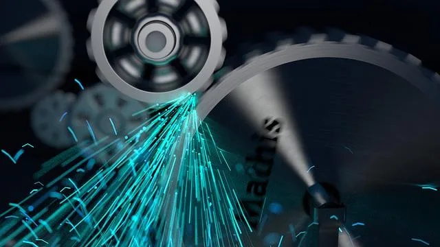

We believe security software like Kicksecure needs to remain Open Source and independent. Would you help sustain and grow the project? Learn more about our 14 year success story and maybe DONATE!
Nested
VirtualizationAdvanced
DocumentationVirtualBox/Manual
VM ImportPrevious page:
Nested VirtualizationIndex page: Advanced
DocumentationNext page: VirtualBox/Manual VM
Import
Kicksecure Tuning

Making Kicksecure Faster. Tuning Kicksecure.
Choose your platform to get started.
Introduction
 Everything in this chapter is entirely optional.
Everything in this chapter is entirely optional.
Applying steps in this chapter can improve Kicksecure performance, but often at the cost of reduced security or an increased fingerprinting risk. Earlier entries in this chapter are easier to apply, while later tuning entries require a greater skill level.
Tested Tuning Steps
Hardware-accelerated Graphics
On Kicksecure 18, hardware-accelerated graphics under VirtualBox are
broken when using the default VMSVGA graphics adapter.
Under KVM, hardware-accelerated graphics are untested.
Attempting to use graphics acceleration under VirtualBox may cause faulty behavior, including:[1]
- Kernel oopses/panics
- Display server (labwc) crashes
- Application crashes
- Failure to use GPU acceleration
As such, this is Unsupported.
Renderer
In some situations, softwarecontext renderer is set by
default in Kicksecure.
Package vm-config-dist [2] sets
softwarecontext renderer if hardware acceleration is
unavailable. In technical terms, this means only if the
OpenGL renderer string is llvmpipe according
to
glxinfo
, then the environment variable
QMLSCENE_DEVICE=softwarecontext is set.
This setting is particularly useful in cases where hardware acceleration is disabled (which is the default in Kicksecure VMs) for applications such as:
- Monero [3]
signal-desktop, and potentiallywire-desktop, as well as- other
electron-based applications. (Note: This setting is unrelated toelectrum.)
However, this configuration has been reported to cause issues with:
- shotcut
- kdenlive (Video editing software fails to launch on Whonix (VirtualBox/KVM))
General information:
- Does this setting have any security impact? No.
- When does it make sense to undo this setting? Likely when Hardware-accelerated Graphics is enabled.
- Is the user encouraged to experiment with this setting? Yes.
Forum search:
How to test if issues are caused by
QMLSCENE_DEVICE=softwarecontext?
Temporarily disable it.
Disable Softwarecontext Renderer
1. Notice.
- A) VM: If intending starting application inside VM, change environment variables inside VM.
- B) host operating system (OS): If intending starting application on host, change environment variables on the host.
2. Select a method.
Command Line Method
3. Temporarily unset the environment variable.
unset QMLSCENE_DEVICE
4. Launch the application from the command line.
5. Done.
Notes:
- This method does not work if:
- Applications are started from the start menu.
- The unset command was run in a different terminal than the one used to launch the application.
- This process needs to be repeated after a reboot.
Configuration File Deletion Method
3. Delete the configuration file that sets this environment variable.
sudo safe-rm -f /etc/profile.d/20_software_rendering_in_vms.sh
4. Reboot the system.
sudo reboot
5. Done.
6. To undo this change (optional, see footnote). [4]
Technical Information
Additional information for developers only:
- Related source code file:
 Kicksecure/vm-config-dist
Kicksecure/vm-config-dist
Increase Virtual Machine RAM
RAM available to Virtual Machines can be increased via VirtualBox settings.
To check how much RAM is free, use free -m in a
Terminal. Consider the example below:
- Shutdown the VM.
- Assign more RAM:
VirtualBox→click a VM→Settings→System→AdjustBase Memory slider to 4096→Click:OK - Restart the VM.
See also: Advice for Systems with Low RAM.
Additional CPU Cores
 Warning: this procedure may increase fingerprinting
risks.
Warning: this procedure may increase fingerprinting
risks.
Do not use the maximum since that could lead to system instability! Always leave at least one CPU unassigned; for example, if you have four CPUs then assign a maximum of three CPUs to the VM. [5]
- Power off the VM.
VirtualBox→click a VM→Settings→System→Processor→AdjustNumber of CPUs to 3→Click:OK- Restart the VM.
Untested Tuning Steps
Disable CPU Mitigations
 Warning: this procedure lessens security.
Warning: this procedure lessens security.
Consider disabling the Spectre Meltdown mitigations. (Related forum discussion.)
This step should be performed in the VM intended for disabled CPU mitigations and on the host operating system if either Kicksecure or security-misc are in use.
1. Remove the relevant CPU mitigations file.
sudo rm /etc/default/grub.d/40_cpu_mitigations.cfg
2. Update grub.
sudo update-grub
3. Reboot.
4. Done.
Nested Paging and VPIDs
It is possible to increase performance by using largepages and/or Virtual Processor Identifiers (VPIDs). It is unknown if this decreases security or stability. For further information refer to the VirtualBox manual: Nested Paging and VPIDs.
vboxmanage modifyvm Kicksecure-LXQt --large-pages on
vboxmanage modifyvm Kicksecure-LXQt --vtx-vpid on
Memory Ballooning, Page Fusion and Memory Overcommitment
 Warning: this procedure lessens security.
Warning: this procedure lessens security.
Memory ballooning worsens security because it is a vector for side channel attacks on memory; see Dev/KVM, memory balloon for further information. [6]
For other security considerations, refer to the VirtualBox manual: Memory Overcommitment.
Undocumented Tuning Settings
There are probably more tuning-related settings, but these are currently undocumented at Kicksecure. Interested readers can review the manual for relevant settings of their respective virtualizer, which are unlikely to be bundled under a "tuning" chapter.
To view all settings, run.
vboxmanage showvminfo Kicksecure-LXQt
Next, learn about all of these settings by reviewing the VirtualBox manual.
PCI Passthrough
 Warning: this procedure lessens security.
Warning: this procedure lessens security.
This setting can improve graphics performance dramatically, but it worsens security because VMs should not have direct access to physical hardware.
In simple terms, this feature allows the direct use of physical PCI devices on the host by the guest even if the host does not have drivers for the particular device.
See Also
Footnotes
- ↑ https://forums.kicksecure.com/t/3d-acceleration-for-kicksecure-vms/1393
- ↑ version
3:11.1-1and above - ↑ * https://github.com/monero-project/monero-gui/issues/2878 * https://github.com/monero-project/monero-gui/pull/4419 * https://forums.whonix.org/t/monero-integration-in-whonix/5949/31
- ↑ sudo apt-get-reset vm-config-dist (Refer to Reset Configuration Files to Vendor Default for more information.)
- ↑ VirtualBox ticket: VirtualBox should now prohibit assigning all physical CPUs to a VM and/or fix VirtualBox CPU assignment manual.
- ↑ This entry relates to KVM but the research similarly applies to other virtualizers unless they have implemented and documented specific protections.
- ↑ https://www.virtualbox.org/wiki/Changelog-6.1 Quote: "Linux host: Drop PCI passthrough, the current code is too incomplete (cannot handle PCIe devices at all), i.e. not useful enough"
Categories: Documentation